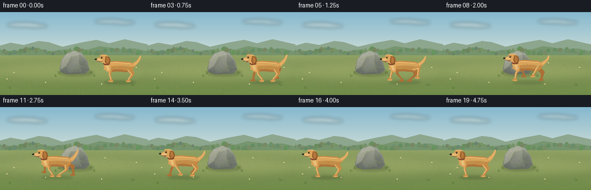
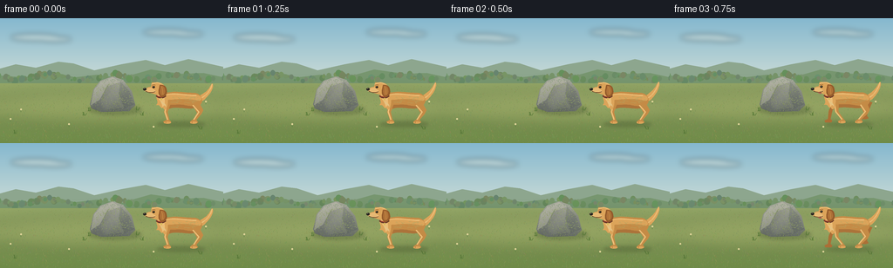

CODING AGENTS AS PIXEL WORLD MODELS
traex/GPT-6.1-Sol · dynamic_spatial_relationship_0004
点击播放 · 原生 RGB 像素
逐轮保存的候选
回放视频、检查图与代码变化。
每份候选均可单独播放。实际图片检查记录在下方工具轨迹中。
候选 01播放与检查图
点击播放 · 原生 RGB 像素


展开代码变化
--- 上一保存版本
+++ 本次保存版本
@@ -0,0 +1,212 @@
+from pathlib import Path
+import json, math
+import numpy as np
+from PIL import Image, ImageDraw, ImageFilter
+import artifact_io
+
+ROOT = Path(__file__).resolve().parent
+SPEC = json.loads((ROOT / 'task_spec.json').read_text())
+W, H = SPEC['width'], SPEC['height']
+S = 4
+rng = np.random.default_rng(714)
+
+def pxy(points):
+ return [(round(x*S), round(y*S)) for x,y in points]
+
+def polygon(im, pts, fill):
+ ImageDraw.Draw(im).polygon(pxy(pts), fill=fill)
+
+def line(im, pts, fill, width=1):
+ ImageDraw.Draw(im).line(pxy(pts), fill=fill, width=max(1,round(width*S)), joint='curve')
+
+def ellipse(im, box, fill):
+ ImageDraw.Draw(im).ellipse(tuple(round(v*S) for v in box),fill=fill)
+
+def bezier(points, steps=16):
+ # First point followed by cubic segments.
+ out=[points[0]]
+ for i in range(1,len(points)-2,3):
+ a=np.array(out[-1]); b,c,d=map(np.array,points[i:i+3])
+ for t in np.linspace(0,1,steps+1)[1:]:
+ q=(1-t)**3*a+3*(1-t)**2*t*b+3*(1-t)*t*t*c+t**3*d
+ out.append(tuple(q))
+ remainder=(len(points)-1)%3
+ if remainder:
+ out.extend(points[-remainder:])
+ return out
+
+def curve(im, points, fill, width=1):
+ line(im,bezier(points),fill,width)
+
+def shape(im, points, fill):
+ polygon(im,bezier(points),fill)
+
+# A quiet, fixed-camera late-spring landscape. All texture is generated locally.
+y,x=np.mgrid[0:H*S,0:W*S]/S
+sky=np.zeros((H*S,W*S,3),float)
+v=np.clip(y/90,0,1)[...,None]
+sky[:]=np.array([133,184,207])*(1-v)+np.array([221,229,216])*v
+base=Image.fromarray(np.uint8(sky),'RGB').convert('RGBA')
+cloud=Image.new('RGBA',base.size)
+for cx,cy,rx,ry in [(40,22,28,4),(62,24,20,3),(190,16,26,3.5),(215,18,18,2.7)]:
+ ellipse(cloud,(cx-rx,cy-ry,cx+rx,cy+ry),(255,250,231,90))
+base=Image.alpha_composite(base,cloud.filter(ImageFilter.GaussianBlur(3*S)))
+polygon(base,[(0,70),(0,58),(18,53),(41,57),(67,50),(84,52),(108,60),(139,53),(167,48),(189,54),(216,47),(256,56),(256,80)],(141,166,142,255))
+polygon(base,[(0,83),(0,66),(28,68),(57,61),(86,68),(111,65),(138,69),(173,59),(208,64),(233,63),(256,68),(256,88)],(119,150,111,255))
+# Small distant treetops and sunlit hedges.
+for j in range(135):
+ xx=float(rng.uniform(-5,261)); yy=68+3*math.sin(xx*.085)+float(rng.uniform(-2,2)); r=float(rng.uniform(1,4))
+ ellipse(base,(xx-r,yy-r*1.2,xx+r,yy+r),tuple([int(z) for z in (rng.uniform(100,124),rng.uniform(132,151),rng.uniform(91,113))])+ (255,))
+# Ground with fine dappled paper/soil variation.
+arr=np.array(base).astype(float)
+ground_y=75
+for yy in range(ground_y*S,H*S):
+ v=(yy/S-ground_y)/(H-ground_y)
+ col=np.array([148,167,103])*(1-v)+np.array([111,139,72])*v
+ noise=rng.normal(0,1.4,(W*S,1))
+ arr[yy,:,:3]=col+noise
+base=Image.fromarray(np.uint8(np.clip(arr,0,255)),'RGBA')
+# Wide swath of lighter grass.
+wash=Image.new('RGBA',base.size)
+ellipse(wash,(-34,83,288,125),(208,196,129,48))
+base=Image.alpha_composite(base,wash.filter(ImageFilter.GaussianBlur(9*S)))
+for j in range(2300):
+ xx=float(rng.uniform(0,W)); yy=float(rng.uniform(77,H)); depth=(yy-76)/68
+ leng=float(rng.uniform(.4,2.5))*(.3+.8*depth)
+ c=(int(rng.uniform(101,156)),int(rng.uniform(128,166)),int(rng.uniform(66,103)),int(rng.uniform(90,180)))
+ line(base,[(xx,yy),(xx+rng.uniform(-.8,.8),yy-leng)],c,.21+.16*depth)
+# Ground shadows anchor the boulder.
+sh=Image.new('RGBA',base.size)
+ellipse(sh,(102,100,162,111),(43,59,36,65))
+base=Image.alpha_composite(base,sh.filter(ImageFilter.GaussianBlur(2*S)))
+rock_poly=[(103,99),(107,82),(115,72),(129,67),(141,71),(151,84),(155,100),(148,107),(116,108),(105,104)]
+mask=Image.new('L',base.size); polygon(mask,rock_poly,255)
+# Continuous slate texture under sparse planes, rather than a flat icon.
+ry,rx=np.mgrid[0:H*S,0:W*S]/S
+n=rng.normal(0,1.8,(H*S,W*S))
+shade=np.clip((ry-69)/40,0,1)
+illum=3*np.sin(rx*.24+ry*.16)+1.2*np.sin(rx*1.13-ry*.73)+n
+rock=np.zeros((H*S,W*S,4),np.uint8)
+for ch,(a,b) in enumerate([(164,96),(165,102),(153,97)]): rock[:,:,ch]=np.clip(a+(b-a)*shade+illum,0,255)
+rock[:,:,3]=np.array(mask)
+rlayer=Image.fromarray(rock,'RGBA')
+facets=Image.new('RGBA',base.size)
+polygon(facets,[(108,82),(116,73),(129,68),(138,73),(122,79),(114,94),(104,100)],(204,203,183,93))
+polygon(facets,[(138,73),(148,84),(154,99),(142,104),(136,88)],(73,83,78,62))
+polygon(facets,[(115,96),(129,83),(136,87),(142,103),(121,105)],(158,162,143,38))
+rlayer=Image.alpha_composite(rlayer,facets)
+for j in range(630):
+ xx=float(rng.uniform(104,154)); yy=float(rng.uniform(70,107));
+ if mask.getpixel((int(xx*S),int(yy*S)))>0:
+ col=(205,204,181,35) if j%3 else (63,74,66,35)
+ ellipse(rlayer,(xx,yy,xx+rng.uniform(.15,.65),yy+rng.uniform(.12,.4)),col)
+curve(rlayer,[(124,76),(122,83),(117,85),(118,94)],(86,95,88,91),.45)
+curve(rlayer,[(139,84),(136,86),(138,94),(135,99)],(81,91,82,55),.4)
+base=Image.alpha_composite(base,rlayer)
+# Small tufts beside, not across, the main subjects.
+for xx,yy in [(101,107),(156,106),(162,112),(95,112),(229,128),(16,133)]:
+ for k in range(5):
+ line(base,[(xx+k*.7,yy),(xx+k*.7+rng.uniform(-2,2),yy-rng.uniform(2,5))],(88,120,56,230),.4)
+for xx,yy in [(24,108),(79,125),(176,128),(236,99),(12,119),(182,91)]:
+ line(base,[(xx,yy),(xx-.3,yy-3)],(90,125,65,255),.4)
+ ellipse(base,(xx-1,yy-4,xx+1,yy-2),(225,214,154,255))
+
+# Reusable golden-dog renderer, side view facing left. Articulated paws,
+# hocks, shoulders and galloping spine keep its silhouette unmistakably canine.
+def dog(frame, cx, cy, phase, run):
+ layer=Image.new('RGBA',base.size)
+ def tr(pts):return [(cx+a,cy+b) for a,b in pts]
+ def ln(pts,col,w=1):line(layer,tr(pts),col,w)
+ def cv(pts,col,w=1):curve(layer,tr(pts),col,w)
+ def sp(pts,col):shape(layer,tr(pts),col)
+ def el(box,col):ellipse(layer,(cx+box[0],cy+box[1],cx+box[2],cy+box[3]),col)
+ brown=(148,91,43,255); shade=(171,111,54,255); tan=(196,139,70,255); gold=(220,164,90,255); light=(236,190,120,255)
+ # Leg geometry, both pairs alternate in a two-beat gallop.
+ def leg(front,near):
+ hipx=-15 if front else 15
+ hipy=-25 if front else -24
+ ph=phase+(0 if front else 1.9)+(0 if near else math.pi)
+ swing=math.sin(ph)*run
+ lift=max(0,math.cos(ph))*8.0*run
+ footx=hipx+13*swing
+ footy=-1-lift
+ knee=(hipx+(-3 if front else 6)+6*swing,-13-2*lift)
+ if front:
+ pts=[(hipx-3,hipy),(hipx+3,hipy+1),(knee[0]+2,knee[1]),(footx+1,footy-3),(footx+3,footy-1),(footx+2,footy+1),(footx-5,footy+1),(footx-6,footy-1),(footx-2,footy-3),(knee[0]-2,knee[1])]
+ else:
+ pts=[(hipx-5,hipy-1),(hipx+4,hipy-2),(knee[0]+4,knee[1]-2),(knee[0]+2,knee[1]+2),(footx+2,footy-3),(footx+4,footy),(footx+1,footy+1),(footx-5,footy+1),(footx-5,footy-1),(footx-1,footy-4),(knee[0]-3,knee[1]+1)]
+ polygon(layer,tr(pts),shade if not near else tan)
+ if near:
+ ln([(hipx-2,hipy+3),(knee[0]-1,knee[1]),(footx-1,footy-3)],light,1.6)
+ el((footx-5,footy-1,footx+3,footy+1.4),gold)
+ ln([(footx-3,footy-.8),(footx-3,footy+.7)],shade,.38)
+ leg(True,False); leg(False,False)
+ # Raised feathered tail, with small wag independent of foot movement.
+ wag=math.sin(frame*.72)*2
+ sp([(17,-30),(23,-33),(29,-36-wag),(32,-41-wag),(35,-46-wag),(36,-48-wag),(36,-42-wag),(35,-37-wag),(32,-33),(26,-27),(22,-24),(18,-26),(17,-30)],gold)
+ cv([(22,-29),(28,-31),(34,-39-wag),(35,-45-wag)],light,1.2)
+ for k in range(6):
+ ln([(26+k*1.1,-31-k*1.4),(29+k*.9,-31-k*1.6)],(224,173,98,255),.6)
+ # Smooth elongated torso and rump, narrow waist and deep chest.
+ bodypts=[(-22,-33),(-13,-39),(3,-35),(16,-35),(25,-33),(26,-23),(19,-19),(9,-15),(-4,-20),(-13,-17),(-18,-13),(-24,-22),(-22,-33)]
+ sp(bodypts,tan)
+ sp([(-21,-32),(-12,-37),(3,-33),(16,-33),(23,-33),(25,-26),(20,-26),(8,-29),(-4,-28),(-15,-27),(-20,-26),(-23,-27),(-21,-32)],gold)
+ cv([(-17,-33),(-7,-35),(5,-32),(17,-32)],light,1.3)
+ sp([(-19,-22),(-10,-20),(-2,-23),(8,-20),(13,-20),(18,-18),(18,-18),(7,-15),(-4,-20),(-13,-17),(-19,-17),(-20,-21),(-19,-22)],(172,115,58,255))
+ leg(False,True);leg(True,True)
+ # Fur mane and lifted neck flow into the head.
+ sp([(-23,-38),(-21,-39),(-14,-31),(-16,-22),(-16,-16),(-20,-14),(-21,-18),(-25,-16),(-23,-22),(-29,-21),(-25,-25),(-30,-27),(-28,-32),(-28,-37),(-26,-40),(-23,-38)],gold)
+ sp([(-28,-33),(-26,-26),(-22,-25),(-22,-19),(-20,-19),(-18,-23),(-20,-30),(-23,-37),(-26,-38),(-28,-37),(-28,-33)],light)
+ for k in range(8):
+ a=-24+k*.75;b=-26+k*.55
+ ln([(a,b),(a+1,b+3)],(244,203,140,210),.45)
+ # The narrow dark red collar gives a crisp separation of face and chest.
+ cv([(-29,-32),(-26,-29),(-21,-29),(-18,-32)],(101,55,40,255),2)
+ cv([(-28.5,-32),(-25,-30),(-21,-30),(-18.8,-32)],(172,73,52,255),.9)
+ el((-24.2,-29.3,-22.1,-26.6),(218,185,93,255))
+ # Skull, brow and forward-projecting muzzle.
+ sp([(-30,-47),(-24,-48),(-19,-45),(-19,-40),(-18,-35),(-23,-31),(-29,-33),(-32,-34),(-36,-35),(-40,-37),(-42,-39),(-40,-42),(-35,-42),(-34,-47),(-30,-47)],gold)
+ sp([(-34,-41),(-39,-41),(-43,-39),(-42,-37),(-38,-35),(-32,-35),(-29,-36),(-31,-39),(-33,-40),(-34,-40),(-34,-41)],(231,185,116,255))
+ cv([(-34,-45),(-31,-47),(-25,-48),(-22,-44)],light,1)
+ # Floppy near ear, shaded tip and gently curved inner ridge.
+ sp([(-25,-44),(-21,-45),(-17,-43),(-17,-38),(-16,-34),(-19,-30),(-22,-30),(-26,-31),(-27,-35),(-26,-39),(-25,-44)],brown)
+ sp([(-24,-43),(-21,-44),(-19,-41),(-19,-38),(-18,-34),(-21,-32),(-23,-32),(-25,-34),(-25,-38),(-24,-41),(-24,-43)],(175,114,56,255))
+ cv([(-23,-42),(-21,-40),(-22,-36),(-21,-33)],(197,136,68,255),.7)
+ # Visible eye, nose, mouth, and tiny highlights.
+ el((-33.5,-43,-30.4,-40.5),(78,55,29,255))
+ el((-32.9,-42.8,-30.8,-40.6),(34,30,24,255))
+ el((-32.6,-42.6,-31.9,-41.9),(246,236,202,255))
+ cv([(-34,-44),(-33,-44.7),(-31,-44.6),(-30,-44)],(147,99,48,255),.55)
+ el((-44,-40.7,-40.3,-37.7),(39,37,32,255))
+ el((-43.3,-40.4,-41.9,-39.7),(108,105,86,255))
+ cv([(-41,-36.9),(-37,-34.7),(-33,-35.2),(-30,-36.5)],(103,65,38,255),.65)
+ if run>.2:
+ sp([(-36,-35.1),(-35,-34),(-33,-33),(-32,-34),(-31,-35),(-34,-35.2),(-36,-35.1)],(173,94,82,255))
+ # Short fine coat strokes on the body, deterministic in local coordinates.
+ rr=np.random.default_rng(221)
+ for k in range(65):
+ a=rr.uniform(-13,19);b=rr.uniform(-31,-23)
+ ln([(a,b),(a+rr.uniform(1,2.5),b+.45)],(230,178,103,100),.3)
+ return layer
+
+frames=[]
+for i in range(SPEC['frames']):
+ # Clearly establish initial and final relations, with a continuous traverse.
+ u=np.clip((i-2)/14,0,1)
+ # Ease-in/out without hiding the run in an abrupt jump.
+ v=u*u*(3-2*u)
+ cx=208-153*v
+ run=math.sin(math.pi*u)**.35 if 0<u<1 else 0.0
+ phase=(i-2)*1.68
+ bob=-1.8*run*(.5+.5*math.sin(phase*2))
+ cy=121+bob
+ out=base.copy()
+ sh=Image.new('RGBA',out.size)
+ ellipse(sh,(cx-28,119,cx+27,125),(43,58,28,int(54-12*run)))
+ out=Image.alpha_composite(out,sh.filter(ImageFilter.GaussianBlur(1.8*S)))
+ out=Image.alpha_composite(out,dog(i,cx,cy,phase,run))
+ # Very light film-like texture is stationary and does not flicker.
+ rgb=np.array(out.convert('RGB').resize((W,H),Image.Resampling.LANCZOS))
+ frames.append(rgb)
+artifact_io.save(np.stack(frames).astype(np.uint8), ROOT)
+print(f'Saved {len(frames)} RGB frames at {W}x{H}, {SPEC["fps"]} fps.')
可观测工具轨迹
实际执行的命令与返回图片。
命令 1exit 0
/bin/bash -lc 'ls -la && cat prompt.txt && cat GENERATION_RULES.md && cat task_spec.json'
命令 2exit 0
/bin/bash -lc 'cat artifact_io.py'
命令 3exit 1
/bin/bash -lc "cat > generate.py <<'PY'
from pathlib import Path
import json, math
import numpy as np
from PIL import Image, ImageDraw, ImageFilter
import artifact_io
ROOT = Path(__file__).resolve().parent
SPEC = json.loads((ROOT / 'task_spec.json').read_text())
W, H = SPEC['width'], SPEC['height']
S = 4
rng = np.random.default_rng(714)
def pxy(points):
return [(round(x*S), round(y*S)) for x,y in points]
def polygon(im, pts, fill):
ImageDraw.Draw(im).polygon(pxy(pts), fill=fill)
def line(im, pts, fill, width=1):
ImageDraw.Draw(im).line(pxy(pts), fill=fill, width=max(1,round(width*S)), joint='curve')
def ellipse(im, box, fill):
ImageDraw.Draw(im).ellipse(tuple(round(v*S) for v in box),fill=fill)
def bezier(points, steps=16):
# First point followed by cubic segments.
out=[points[0]]
for i in range(1,len(points),3):
a=np.array(out[-1]); b,c,d=map(np.array,points[i:i+3])
for t in np.linspace(0,1,steps+1)[1:]:
q=(1-t)**3*a+3*(1-t)**2*t*b+3*(1-t)*t*t*c+t**3*d
out.append(tuple(q))
return out
def curve(im, points, fill, width=1):
line(im,bezier(points),fill,width)
def shape(im, points, fill):
polygon(im,bezier(points),fill)
# A quiet, fixed-camera late-spring landscape. All texture is generated locally.
y,x=np.mgrid[0:H*S,0:W*S]/S
sky=np.zeros((H*S,W*S,3),float)
v=np.clip(y/90,0,1)[...,None]
sky[:]=np.array([133,184,207])*(1-v)+np.array([221,229,216])*v
base=Image.fromarray(np.uint8(sky),'RGB').convert('RGBA')
cloud=Image.new('RGBA',base.size)
for cx,cy,rx,ry in [(40,22,28,4),(62,24,20,3),(190,16,26,3.5),(215,18,18,2.7)]:
ellipse(cloud,(cx-rx,cy-ry,cx+rx,cy+ry),(255,250,231,90))
base=Image.alpha_composite(base,cloud.filter(ImageFilter.GaussianBlur(3*S)))
polygon(base,[(0,70),(0,58),(18,53),(41,57),(67,50),(84,52),(108,60),(139,53),(167,48),(189,54),(216,47),(256,56),(256,80)],(141,166,142,255))
polygon(base,[(0,83),(0,66),(28,68),(57,61),(86,68),(111,65),(138,69),(173,59),(208,64),(233,63),(256,68),(256,88)],(119,150,111,255))
# Small distant treetops and sunlit hedges.
for j in range(135):
xx=float(rng.uniform(-5,261)); yy=68+3*math.sin(xx*.085)+float(rng.uniform(-2,2)); r=float(rng.uniform(1,4))
ellipse(base,(xx-r,yy-r*1.2,xx+r,yy+r),tuple([int(z) for z in (rng.uniform(100,124),rng.uniform(132,151),rng.uniform(91,113))])+ (255,))
# Ground with fine dappled paper/soil variation.
arr=np.array(base).astype(float)
ground_y=75
for yy in range(ground_y*S,H*S):
v=(yy/S-ground_y)/(H-ground_y)
col=np.array([148,167,103])*(1-v)+np.array([111,139,72])*v
noise=rng.normal(0,1.4,(W*S,1))
arr[yy,:,:3]=col+noise
base=Image.fromarray(np.uint8(np.clip(arr,0,255)),'RGBA')
# Wide swath of lighter grass.
wash=Image.new('RGBA',base.size)
ellipse(wash,(-34,83,288,125),(208,196,129,48))
base=Image.alpha_composite(base,wash.filter(ImageFilter.GaussianBlur(9*S)))
for j in range(2300):
xx=float(rng.uniform(0,W)); yy=float(rng.uniform(77,H)); depth=(yy-76)/68
leng=float(rng.uniform(.4,2.5))*(.3+.8*depth)
c=(int(rng.uniform(101,156)),int(rng.uniform(128,166)),int(rng.uniform(66,103)),int(rng.uniform(90,180)))
line(base,[(xx,yy),(xx+rng.uniform(-.8,.8),yy-leng)],c,.21+.16*depth)
# Ground shadows anchor the boulder.
sh=Image.new('RGBA',base.size)
ellipse(sh,(102,100,162,111),(43,59,36,65))
base=Image.alpha_composite(base,sh.filter(ImageFilter.GaussianBlur(2*S)))
rock_poly=[(103,99),(107,82),(115,72),(129,67),(141,71),(151,84),(155,100),(148,107),(116,108),(105,104)]
mask=Image.new('L',base.size); polygon(mask,rock_poly,255)
# Continuous slate texture under sparse planes, rather than a flat icon.
ry,rx=np.mgrid[0:H*S,0:W*S]/S
n=rng.normal(0,1.8,(H*S,W*S))
shade=np.clip((ry-69)/40,0,1)
illum=3*np.sin(rx*.24+ry*.16)+1.2*np.sin(rx*1.13-ry*.73)+n
rock=np.zeros((H*S,W*S,4),np.uint8)
for ch,(a,b) in enumerate([(164,96),(165,102),(153,97)]): rock[:,:,ch]=np.clip(a+(b-a)*shade+illum,0,255)
rock[:,:,3]=np.array(mask)
rlayer=Image.fromarray(rock,'RGBA')
facets=Image.new('RGBA',base.size)
polygon(facets,[(108,82),(116,73),(129,68),(138,73),(122,79),(114,94),(104,100)],(204,203,183,93))
polygon(facets,[(138,73),(148,84),(154,99),(142,104),(136,88)],(73,83,78,62))
polygon(facets,[(115,96),(129,83),(136,87),(142,103),(121,105)],(158,162,143,38))
rlayer=Image.alpha_composite(rlayer,facets)
for j in range(630):
xx=float(rng.uniform(104,154)); yy=float(rng.uniform(70,107));
if mask.getpixel((int(xx*S),int(yy*S)))>0:
col=(205,204,181,35) if j%3 else (63,74,66,35)
ellipse(rlayer,(xx,yy,xx+rng.uniform(.15,.65),yy+rng.uniform(.12,.4)),col)
curve(rlayer,[(124,76),(122,83),(117,85),(118,94)],(86,95,88,91),.45)
curve(rlayer,[(139,84),(136,86),(138,94),(135,99)],(81,91,82,55),.4)
base=Image.alpha_composite(base,rlayer)
# Small tufts beside, not across, the main subjects.
for xx,yy in [(101,107),(156,106),(162,112),(95,112),(229,128),(16,133)]:
for k in range(5):
line(base,[(xx+k*.7,yy),(xx+k*.7+rng.uniform(-2,2),yy-rng.uniform(2,5))],(88,120,56,230),.4)
for xx,yy in [(24,108),(79,125),(176,128),(236,99),(12,119),(182,91)]:
line(base,[(xx,yy),(xx-.3,yy-3)],(90,125,65,255),.4)
ellipse(base,(xx-1,yy-4,xx+1,yy-2),(225,214,154,255))
# Reusable golden-dog renderer, side view facing left. Articulated paws,
# hocks, shoulders and galloping spine keep its silhouette unmistakably canine.
def dog(frame, cx, cy, phase, run):
layer=Image.new('RGBA',base.size)
def tr(pts):return [(cx+a,cy+b) for a,b in pts]
def ln(pts,col,w=1):line(layer,tr(pts),col,w)
def cv(pts,col,w=1):curve(layer,tr(pts),col,w)
def sp(pts,col):shape(layer,tr(pts),col)
def el(box,col):ellipse(layer,(cx+box[0],cy+box[1],cx+box[2],cy+box[3]),col)
brown=(148,91,43,255); shade=(171,111,54,255); tan=(196,139,70,255); gold=(220,164,90,255); light=(236,190,120,255)
# Leg geometry, both pairs alternate in a two-beat gallop.
def leg(front,near):
hipx=-15 if front else 15
hipy=-25 if front else -24
ph=phase+(0 if front else 1.9)+(0 if near else math.pi)
swing=math.sin(ph)*run
lift=max(0,math.cos(ph))*8.0*run
footx=hipx+13*swing
footy=-1-lift
knee=(hipx+(-3 if front else 6)+6*swing,-13-2*lift)
if front:
pts=[(hipx-3,hipy),(hipx+3,hipy+1),(knee[0]+2,knee[1]),(footx+1,footy-3),(footx+3,footy-1),(footx+2,footy+1),(footx-5,footy+1),(footx-6,footy-1),(footx-2,footy-3),(knee[0]-2,knee[1])]
else:
pts=[(hipx-5,hipy-1),(hipx+4,hipy-2),(knee[0]+4,knee[1]-2),(knee[0]+2,knee[1]+2),(footx+2,footy-3),(footx+4,footy),(footx+1,footy+1),(footx-5,footy+1),(footx-5,footy-1),(footx-1,footy-4),(knee[0]-3,knee[1]+1)]
polygon(layer,tr(pts),shade if not near else tan)
if near:
ln([(hipx-2,hipy+3),(knee[0]-1,knee[1]),(footx-1,footy-3)],light,1.6)
el((footx-5,footy-1,footx+3,footy+1.4),gold)
ln([(footx-3,footy-.8),(footx-3,footy+.7)],shade,.38)
leg(True,False); leg(False,False)
# Raised feathered tail, with small wag independent of foot movement.
wag=math.sin(frame*.72)*2
sp([(17,-30),(23,-33),(29,-36-wag),(32,-41-wag),(35,-46-wag),(36,-48-wag),(36,-42-wag),(35,-37-wag),(32,-33),(26,-27),(22,-24),(18,-26),(17,-30)],gold)
cv([(22,-29),(28,-31),(34,-39-wag),(35,-45-wag)],light,1.2)
for k in range(6):
ln([(26+k*1.1,-31-k*1.4),(29+k*.9,-31-k*1.6)],(224,173,98,255),.6)
# Smooth elongated torso and rump, narrow waist and deep chest.
bodypts=[(-22,-33),(-13,-39),(3,-35),(16,-35),(25,-33),(26,-23),(19,-19),(9,-15),(-4,-20),(-13,-17),(-18,-13),(-24,-22),(-22,-33)]
sp(bodypts,tan)
sp([(-21,-32),(-12,-37),(3,-33),(16,-33),(23,-33),(25,-26),(20,-26),(8,-29),(-4,-28),(-15,-27),(-20,-26),(-23,-27),(-21,-32)],gold)
cv([(-17,-33),(-7,-35),(5,-32),(17,-32)],light,1.3)
sp([(-19,-22),(-10,-20),(-2,-23),(8,-20),(13,-20),(18,-18),(18,-18),(7,-15),(-4,-20),(-13,-17),(-19,-17),(-20,-21),(-19,-22)],(172,115,58,255))
leg(False,True);leg(True,True)
# Fur mane and lifted neck flow into the head.
sp([(-23,-38),(-21,-39),(-14,-31),(-16,-22),(-16,-16),(-20,-14),(-21,-18),(-25,-16),(-23,-22),(-29,-21),(-25,-25),(-30,-27),(-28,-32),(-28,-37),(-26,-40),(-23,-38)],gold)
sp([(-28,-33),(-26,-26),(-22,-25),(-22,-19),(-20,-19),(-18,-23),(-20,-30),(-23,-37),(-26,-38),(-28,-37),(-28,-33)],light)
for k in range(8):
a=-24+k*.75;b=-26+k*.55
ln([(a,b),(a+1,b+3)],(244,203,140,210),.45)
# The narrow dark red collar gives a crisp separation of face and chest.
cv([(-29,-32),(-26,-29),(-21,-29),(-18,-32)],(101,55,40,255),2)
cv([(-28.5,-32),(-25,-30),(-21,-30),(-18.8,-32)],(172,73,52,255),.9)
el((-24.2,-29.3,-22.1,-26.6),(218,185,93,255))
# Skull, brow and forward-projecting muzzle.
sp([(-30,-47),(-24,-48),(-19,-45),(-19,-40),(-18,-35),(-23,-31),(-29,-33),(-32,-34),(-36,-35),(-40,-37),(-42,-39),(-40,-42),(-35,-42),(-34,-47),(-30,-47)],gold)
sp([(-34,-41),(-39,-41),(-43,-39),(-42,-37),(-38,-35),(-32,-35),(-29,-36),(-31,-39),(-33,-40),(-34,-40),(-34,-41)],(231,185,116,255))
cv([(-34,-45),(-31,-47),(-25,-48),(-22,-44)],light,1)
# Floppy near ear, shaded tip and gently curved inner ridge.
sp([(-25,-44),(-21,-45),(-17,-43),(-17,-38),(-16,-34),(-19,-30),(-22,-30),(-26,-31),(-27,-35),(-26,-39),(-25,-44)],brown)
sp([(-24,-43),(-21,-44),(-19,-41),(-19,-38),(-18,-34),(-21,-32),(-23,-32),(-25,-34),(-25,-38),(-24,-41),(-24,-43)],(175,114,56,255))
cv([(-23,-42),(-21,-40),(-22,-36),(-21,-33)],(197,136,68,255),.7)
# Visible eye, nose, mouth, and tiny highlights.
el((-33.5,-43,-30.4,-40.5),(78,55,29,255))
el((-32.9,-42.8,-30.8,-40.6),(34,30,24,255))
el((-32.6,-42.6,-31.9,-41.9),(246,236,202,255))
cv([(-34,-44),(-33,-44.7),(-31,-44.6),(-30,-44)],(147,99,48,255),.55)
el((-44,-40.7,-40.3,-37.7),(39,37,32,255))
el((-43.3,-40.4,-41.9,-39.7),(108,105,86,255))
cv([(-41,-36.9),(-37,-34.7),(-33,-35.2),(-30,-36.5)],(103,65,38,255),.65)
if run>.2:
sp([(-36,-35.1),(-35,-34),(-33,-33),(-32,-34),(-31,-35),(-34,-35.2),(-36,-35.1)],(173,94,82,255))
# Short fine coat strokes on the body, deterministic in local coordinates.
rr=np.random.default_rng(221)
for k in range(65):
a=rr.uniform(-13,19);b=rr.uniform(-31,-23)
ln([(a,b),(a+rr.uniform(1,2.5),b+.45)],(230,178,103,100),.3)
return layer
frames=[]
for i in range(SPEC['frames']):
# Clearly establish initial and final relations, with a continuous traverse.
u=np.clip((i-2)/14,0,1)
# Ease-in/out without hiding the run in an abrupt jump.
v=u*u*(3-2*u)
cx=208-153*v
run=math.sin(math.pi*u)**.35 if 0<u<1 else 0.0
phase=(i-2)*1.68
bob=-1.8*run*(.5+.5*math.sin(phase*2))
cy=121+bob
out=base.copy()
sh=Image.new('RGBA',out.size)
ellipse(sh,(cx-28,119,cx+27,125),(43,58,28,int(54-12*run)))
out=Image.alpha_composite(out,sh.filter(ImageFilter.GaussianBlur(1.8*S)))
out=Image.alpha_composite(out,dog(i,cx,cy,phase,run))
# Very light film-like texture is stationary and does not flicker.
rgb=np.array(out.convert('RGB').resize((W,H),Image.Resampling.LANCZOS))
frames.append(rgb)
artifact_io.save(np.stack(frames).astype(np.uint8), ROOT)
print(f'Saved {len(frames)} RGB frames at {W}x{H}, {SPEC[\"fps\"]} fps.')
PY
python generate.py"命令 4exit 0
/bin/bash -lc "python - <<'PY'
p='generate.py'
s=open(p).read().replace('for i in range(1,len(points),3):','for i in range(1,len(points)-2,3):').replace(' out.append(tuple(q))\\n return out',' out.append(tuple(q))\\n remainder=(len(points)-1)%3\\n if remainder:\\n out.extend(points[-remainder:])\\n return out')
open(p,'w').write(s)
PY
python generate.py
python - <<'PY'
from pathlib import Path
import numpy as np
from PIL import Image
p=np.load('pixels.npz')['pixels']
assert p.shape==(144,256,20)
fs=list(Path('frames').glob('*.png'))
assert len(fs)==20
assert all(Image.open(f).mode=='RGB' and Image.open(f).size==(256,144) for f in fs)
assert Path('index.html').exists()
print('Verified 20 RGB frames and output artifacts.')
PY"保存候选 1 份；完成命令 4 次；可验证图片返回 0 张。原始 API 响应与完整日志保留在本地。